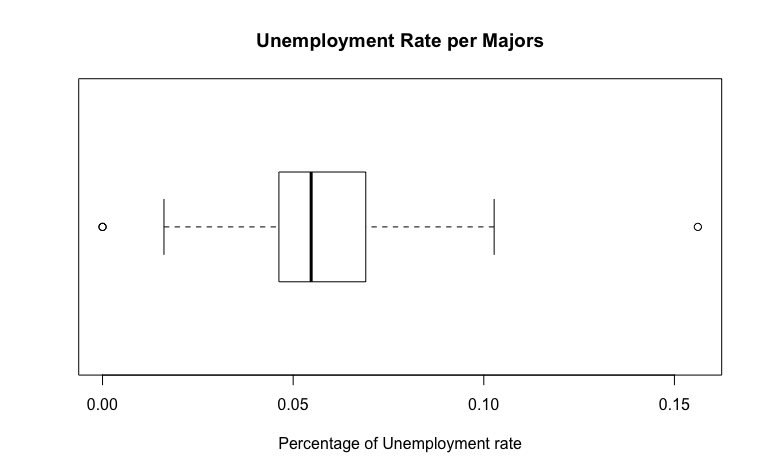
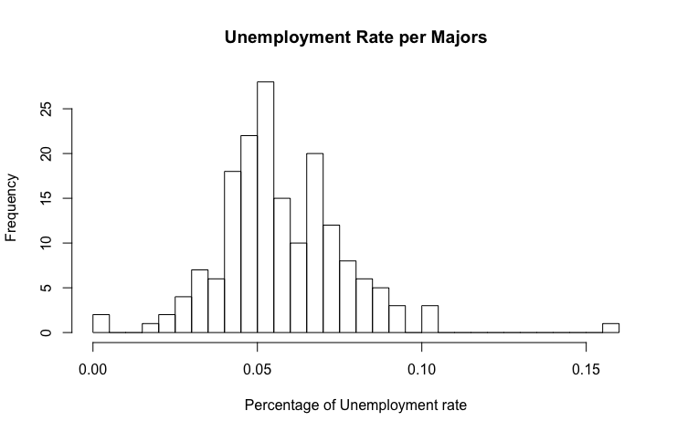

What is "Unemployement_rate"?
The Unemployed_rate column of my dataframe is defined as the rate in which unemployment happens on each majors listed on the all-ages.csv dataframe. The equation for unemployment rate is given by (Unemployed / (Unemployed + Employed)). The mean, standard deviation, skewness and kurtosis are:
Mean: 0.05735545
Standard Deviation: 0.0191771
Skewness: 0.6928492
Kurtosis: 3.644075
BoxPlot and Histogram of the data "Unemployement_rate"
The boxplot of Unemployement_rate is unique in that it was different than the boxplot of both Total and Employed. This is significantly great because it shows 4 outliers that are dissimilar than the outliers of Total and Employed and when something is dissimilar, unexpected things can be found. The boxplot shows the percentage(s) of the Unemployement_rate, a small number than the amount of students since the amount of students exceeded more than 350,000, the Unemployment_rate did not. The data has a standard deviation of 0.019, a number that is quite closer to 0. The standard deviation shows how not spread out the data are from one another as seen on the boxplot.
The histogram is also another plot that is different than both Total and Employed for the same reason as the numbers of Unemployement_rate being small digits. The data's mean is 0.057 as shawn in the histogram with a standard deviation of 0.019. The skewness however is 0.69 slightly closer to 0. A skewness of 0 has a normal distribution but because the Unemployement_rate's skewness is not equal to 0, it can be assume that the distribution is slight skewed towards the right. Similar to the kurtosis of both Total and Employed, the data has a platykurtic curve which sadly enough contradicts what the histogram shows.
Computing the confidence interval for the "Unemployement_rate" # 3:
Knowing that the mean of the data "Unemployement_rate" has mean = 0.05735545, standard deviation = 0.0191771, and the dataset has a length of n = 173. We can compute the margin of error by adding/subtracting the mean from the confidence level times the standard deviation over the square root of n (0.05735545 ± 1.959964 * 0.0191771/sqrt(173)) which gives us the range where the true mean lands on: [0.05449781, 0.0602131].